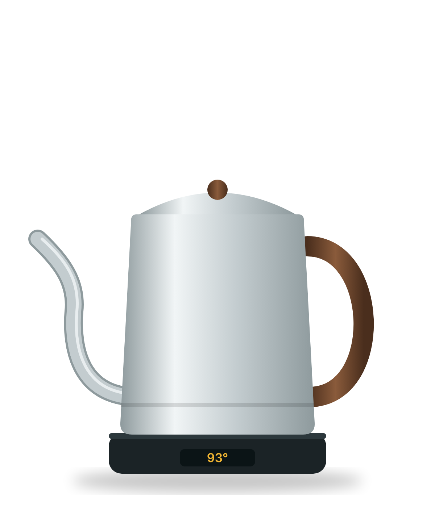
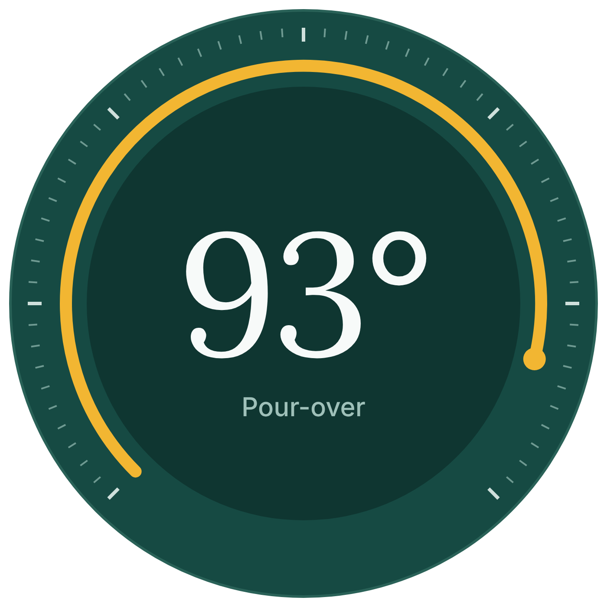
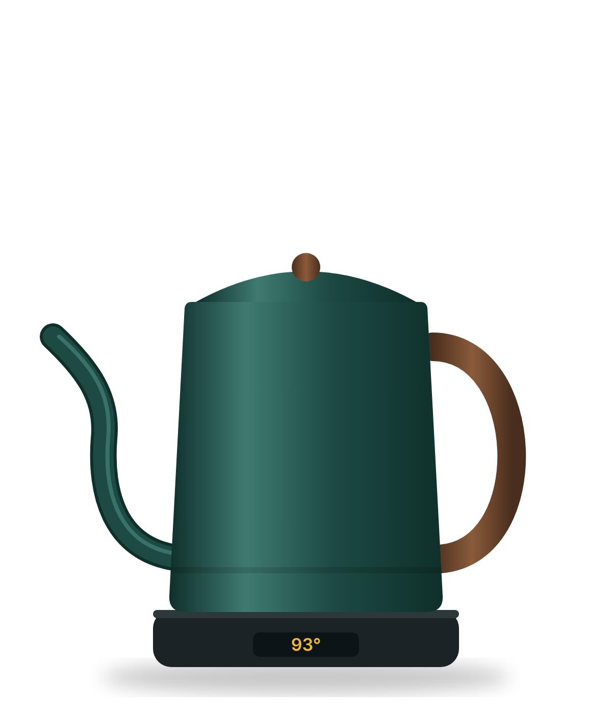
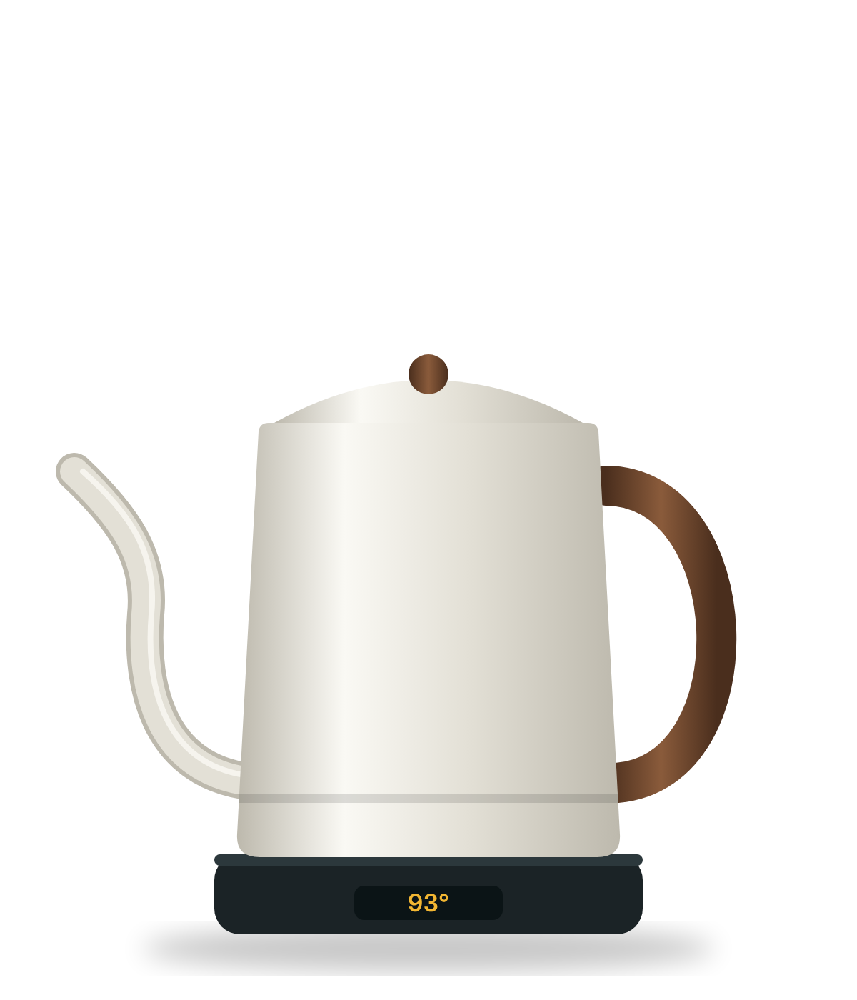

Tern is a one-litre gooseneck kettle that heats to the exact temperature your coffee or tea needs, then keeps it there for an hour.
Free shipping and a 2-year warranty.
Precise to one degree
Set any temperature from 40 to 100°C. Tern holds it within 1°C.
A spout you can steer
The gooseneck gives a slow, even stream, so grounds bloom instead of splash.
Ready for an hour
Leave it on the base while you grind. The water is still at temperature when you return
Switches itself off
Lift it and it remembers your setting. Forget it and it powers down after 60 minutes.

Turn the dial to any degree, or tap a preset for the drink you are making.


I stopped guessing at the kettle. My pour-over tastes the same every morning now.
Mara Okafar, home barista© 2026 Tern